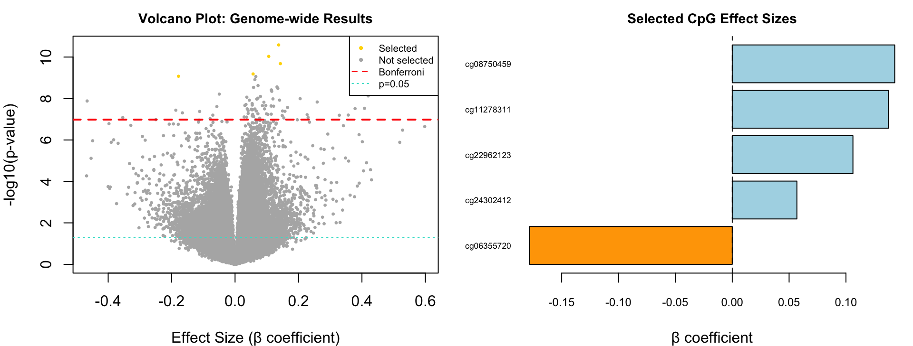
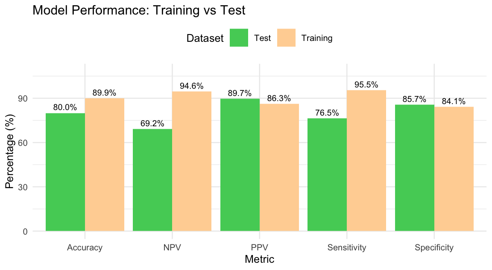
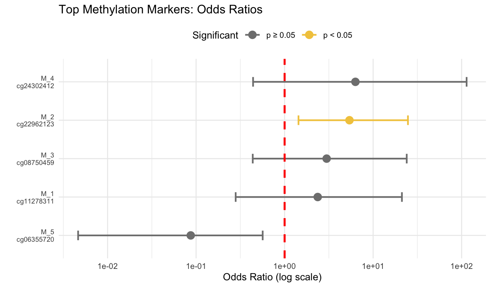

2026-01-17
Clinical Features
Progressive neurodegenerative disorder with memory loss and cognitive decline
Pathological Hallmarks
Braak Staging (0-6)
Measures Tau distribution from transentorhinal (I-II) → limbic (III-IV) → neocortical (V-VI)
Our Approach: Use DNA methylation patterns to predict AD status
What is Methylation?
Epigenetic modification (CH₃ groups) at CpG sites that regulates gene expression without changing DNA sequence
Why M-values?
\(M = \log_2\left(\frac{\beta}{1-\beta}\right)\)
Dataset: GSE66351
Sample Distribution:
The Problem
Consequences
✗ Severe overfitting
✗ Multiple testing burden
✗ Computational impractical
✗ Loss of statistical power
Solution
Linear Model:
\[M_{ij} = \beta_0 + \beta_1 \cdot Braak_i + \beta_2 \cdot Covariates_i + \epsilon_{ij}\]
Tests association with disease progression
Correction Strategy
| Method | Threshold | Significant |
|---|---|---|
| Uncorrected | p < 0.05 | 63078 |
| FDR | q < 0.05 | 3262 |
| Bonferroni | p < 1.03×10⁻⁷ | 72 |
Choice: Bonferroni — Maximum stringency for clinical reliability
Sample Size Calculation
Final: 5 CpGs — Balance power & overfitting

Logistic Regression
\[\log\left(\frac{P(AD)}{1-P(AD)}\right) = \beta_0 + \sum \beta_i M_i + \beta_{cov} X_{cov}\]
Training Strategy
Interpretation
Performance Metrics

Generalization: Δ = 9.9%

Top 5 Predictors
| CpG Site | β | OR | p-value |
|---|---|---|---|
| cg06355720 | -2.442 | 0.09 | 0.0749 |
| cg24302412 | 1.842 | 6.31 | 0.1873 |
| cg22962123 | 1.687 | 5.40 | 0.0189 |
| cg08750459 | 1.093 | 2.98 | 0.2768 |
| cg11278311 | 0.861 | 2.37 | 0.4291 |
Example: cg06355720
Each 1-unit ↑ in M-value multiplies AD odds by 0.09
Strong methylation biomarkers
Scientific Achievements
✓ Genome-wide: 481868 CpGs tested
✓ Selection: 5 significant sites
✓ Validation: 80.0% test accuracy
✓ Mechanistic: Progression-dependent
Biological Insights
Clinical Potential: 1. Blood biomarkers; 2. Therapeutic targets; 3. Patient stratification; 4. Disease mechanisms
Limitations & Future
Critical: Post-mortem ≠ pre-mortem diagnosis
Solution: Accessible tissues (blood/CSF)
API Package
📦 alzheimers_model_api.rds:
Required Inputs
Usage Example
# Load model
model_pkg <- readRDS('alzheimers_model_api.rds')
# Prepare sample
new_data <- data.frame(
M_1 = -2.1, M_2 = 1.8,
# ... other M-values
age = 78, sex = "Female",
cell_type = "bulk",
region = "frontal cortex"
)
# Predict
prob <- predict(model_pkg$model,
new_data,
type = "response")
# Interpret
if (prob > 0.5) {
paste("AD predicted:",
round(prob*100, 1), "%")
}Main Contributions
✓ 5 robust biomarkers (Bonferroni-corrected)
✓ 80.0% test accuracy with good generalization
✓ Controlled for confounders (age, sex, cell type, region)
✓ Deployed API for AD prediction
Impact: Foundation for blood-based biomarkers and therapeutic targets
Purpose
Make predictions accessible via HTTP requests without R expertise
Architecture
plumber R packageKey Features
✓ Real-time predictions
✓ Input validation
✓ Risk stratification
✓ Clinical recommendations
✓ Beta→M conversion
| Endpoint | Method | Purpose | Key Output |
|---|---|---|---|
/health |
GET | System status | Server health, model loaded |
/model-info |
GET | Model details | Performance metrics, requirements |
/cpg-importance |
GET | Biomarker ranking | Odds ratios, effect directions |
/predict |
POST | Risk prediction | AD probability, risk level |
/dataset-stats |
GET | Training data info | Dataset source, methodology |
/convert-beta-to-m |
POST | Value conversion | M-values from beta-values |
Interactive docs: http://localhost:8000/__docs__/
Validation: Exact M-values (5 CpGs) • Covariates present • Factor levels match • Type conversion
import requests
# Step 1: Convert Beta to M-values
beta_response = requests.post(
"http://localhost:8000/convert-beta-to-m",
json={
"beta_values": [0.52, 0.68, 0.45,
0.71, 0.38, 0.64,
0.49, 0.58, 0.67, 0.42]
}
)
m_values = beta_response.json()["m_values"]
# Step 2: Make prediction
prediction = requests.post(
"http://localhost:8000/predict",
json={
"M_values": m_values,
"age": 75,
"sex": "M",
"cell_type": "neuron",
"region": "frontal cortex"
}
)
result = prediction.json()
print(f"Risk: {result['prediction']['risk_level']}")
print(f"Prob: {result['prediction']['probability_percent']}")Current Limitations
⚠ Post-mortem data
- Brain tissue from deceased - Generalization unvalidated
⚠ Single cohort
- Independent validation needed
⚠ Brain tissue only
- Blood/CSF validation required
⚠ No longitudinal data
Production Requirements
Next Steps: 1. Validate on GSE59685, GSE80970 2. Test on accessible biofluids 3. Longitudinal studies 4. Clinical workflow integration
Impact: Critical translation step — research to clinical decision support
Main Achievements
✓ Genome-wide: 481868 CpG sites → 5 robust biomarkers
✓ Test accuracy: 80.0% with excellent generalization
✓ Stringent validation: Bonferroni + covariate control
✓ Clinical translation: REST API for real-time predictions
Scientific Impact: Links DNA methylation to AD pathology
Clinical Impact: Foundation for blood-based diagnostics + decision support
Technical Impact: Open-source API enables broader adoption
Bioinformatics Project - AD Prediction